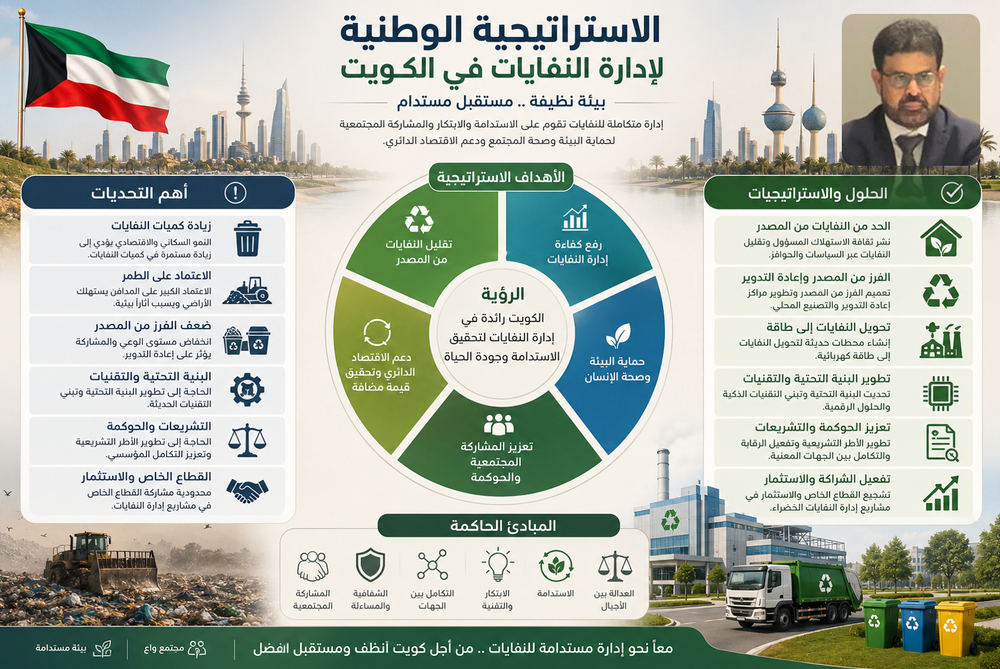

Strategy Overview
In 2024, Kuwait's Environment Public Authority announced the National Waste Management Strategy until 2040. The strategy is built around a clear vision: developing an effective waste management system that reduces the negative impacts of waste generation on human health and the environment, while enabling efficient, safe, and environmentally sound use of waste streams as resources.
The strategy diagnoses the current national reality, including types of waste, active landfills, and closed full landfills. It also states that household waste represents only 3-4% of Kuwait's annual waste, estimated at 37-42 million tonnes.
Data and Recycling Reality
The strategy presents important statistics on Kuwait's waste sector and compares them regionally and globally. It includes collection points by governorate, the number of transport vehicles, workers involved in collection, and transfer to the Jahra, Seventh Ring Road, and Mina Abdullah landfills.
Current recycling is estimated at around 4.9 million tonnes annually. Most of this is metal waste, at more than 70%, with smaller amounts of glass, paper, cardboard, mineral oils, plastic, batteries, and other materials. About 30 companies and facilities are involved in waste treatment and recycling.
Five Core Objectives
- Move toward environmentally friendly waste management technologies.
- Apply the five-step waste hierarchy: prevention, preparing for reuse, recycling, recovery, and safe disposal.
- Clearly define responsibilities and legislation across relevant authorities.
- Build sufficient capacity among active waste management stakeholders, including workforce training and modern technologies.
- Ensure transparency by providing necessary information.
To achieve these goals, the study identifies 25 tasks and steps, with roles for Kuwait Municipality, the Environment Public Authority, the Ministry of Health, the Ministry of Public Works, the Public Authority for Industry, and the General Administration of Customs.
Why Platforms Matter
This strategy is an important step in diagnosing current conditions and measuring waste flows. It can help guide practical solutions, monitor implementation, and hold violators accountable. Green Cycle Platform was established to create a smooth link between waste sources and recycling or scrap-management companies, while also enabling potential government oversight.
Comments
Share your comment with Green Cycle Platform. Comments are published after approval by the team.